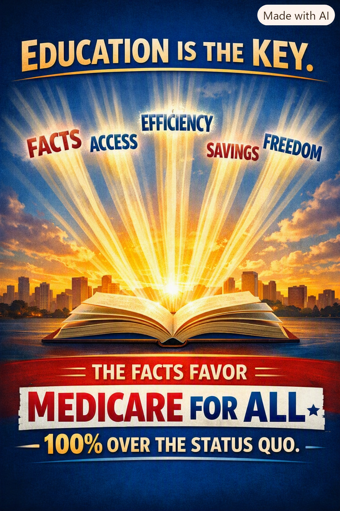

Article 43: Education Is the Key
Facts, access, efficiency, savings, and freedom

Download illustrated Word document (.docx)
Why understanding the facts is essential to a meaningful debate about Medicare for All
The illustration expresses an argument for Medicare for All. Its “100%” slogan is advocacy, not a measured or independently established comparison.
A debate worthy of the American people
The future of American healthcare should not be decided by slogans, partisan labels, or fear of change. It should be decided by what a system actually delivers: timely care, financial security, administrative efficiency, freedom to choose a career or start a business, and a sustainable way to pay for it. Education is the key to making that judgment.
Medicare for All is often confused with today’s Medicare program. They are not the same proposal. A comprehensive single-payer system would seek to cover everyone under a common public financing arrangement, while medical care would continue to be delivered by a mix of healthcare professionals and institutions. The details would depend on the law Congress ultimately enacted.
Five questions every American should ask
1. What would actually be covered?
Compare proposed benefits—hospital and physician care, prescriptions, preventive services, mental health treatment, and potentially dental, vision, hearing, and long-term services—with what people receive today. The scope and exclusions must be written clearly into legislation.
2. What would families pay?
Compare total household costs, not just taxes. Premiums, deductibles, copayments, out-of-pocket bills, and the share of employer compensation devoted to health benefits all matter. A financing plan could shift payments from premiums to taxes; who pays more or less depends on its design.
3. Where could savings come from?
Potential savings include simpler billing, less fragmented insurance administration, and stronger price negotiation. Those savings must be weighed against greater use of services, provider payment changes, transition costs, and implementation risks.
4. Would people have real access?
An insurance card alone does not guarantee an appointment. The number and distribution of doctors, nurses, clinics, hospitals, and other caregivers still determine access. Reform should be judged by wait times, health outcomes, and patient experience.
5. How would it be financed and governed?
A credible proposal needs transparent tax and spending estimates, accountable administration, clear provider payment rules, protections for patients, and a realistic transition plan.
These are the five themes in the accompanying illustration, and each deserves an evidence-based conversation. Facts require credible data rather than convenient statistics. Access means care people can actually obtain. Efficiency means reducing unnecessary paperwork without sacrificing oversight. Savings must be calculated, not assumed. Freedom includes the ability to change jobs, retire, care for family, or build a business without fearing the loss of health insurance.
The United States already spends an extraordinary amount on healthcare, yet many people still struggle with medical bills and coverage limitations. That contradiction is reason enough to examine structural reform seriously. It does not, by itself, prove that every proposed version of Medicare for All would succeed. We must compare specific designs and credible evidence.
What education must not become
Education is not telling people that disagreement proves ignorance. Reasonable people may worry about taxes, government accountability, provider reimbursement, transition disruptions, or the role of private insurance. Those questions deserve answers. Supporters of reform should invite scrutiny, publish assumptions, acknowledge trade-offs, and revise proposals when the evidence calls for it.
A practical national conversation
Imagine every community hosting a discussion that starts with the same plain-language comparison: What do we spend now? What care do we receive? What would change? What would households and employers pay? What safeguards would protect patients? Give people understandable examples, independent analyses, and the chance to ask hard questions. That is how confidence is earned.
We can also learn from other nations without pretending their systems are identical or perfect. Their experiences offer evidence about universal coverage, cost controls, primary care, wait times, and the consequences of different funding choices. America can build a model suited to its own institutions and values.
The conclusion: knowledge before ideology
Medicare for All deserves to be judged on its merits—not dismissed as a political label and not accepted as a miracle cure. The case for change becomes stronger when we explain both the human benefits and the economic choices honestly. An informed public can demand a system that protects health without threatening financial security.
There is no them, only us.
Editorial note: This article advocates serious consideration of Medicare for All. Specific benefits, financing, cost savings, and access outcomes would depend on legislation and implementation. The supplied illustration is presented as an advocacy graphic, not as independent proof of numerical claims.
Share This Article
Help others explore the ideas and evidence behind Medicare for All.
When posting on Facebook, paste these hashtags into your post text. Sharing services may not automatically include them.